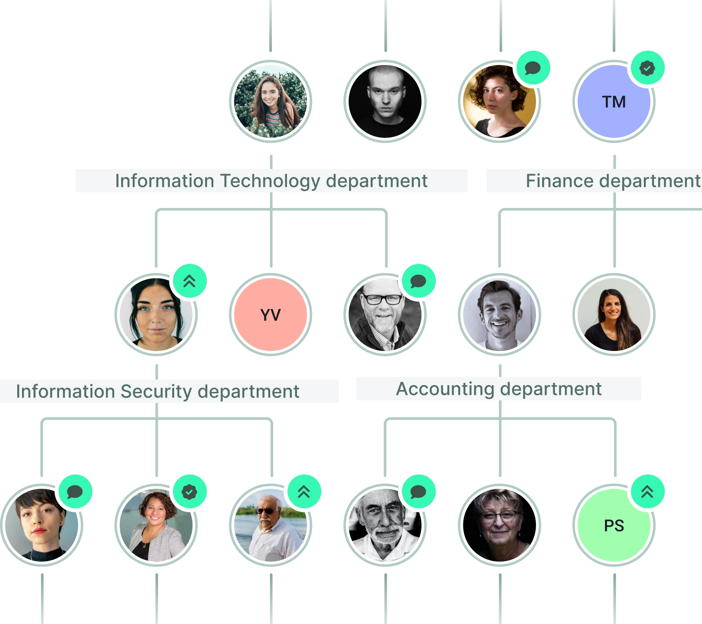
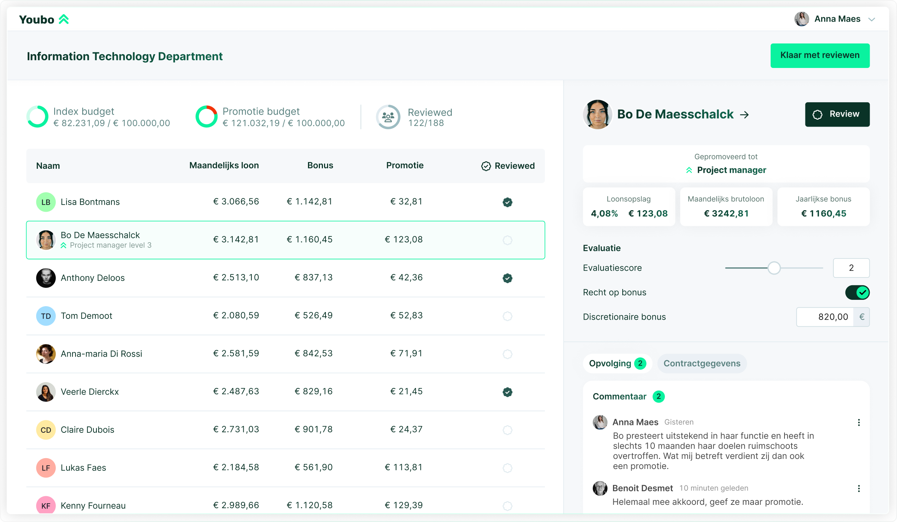
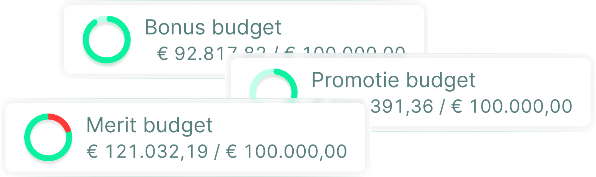
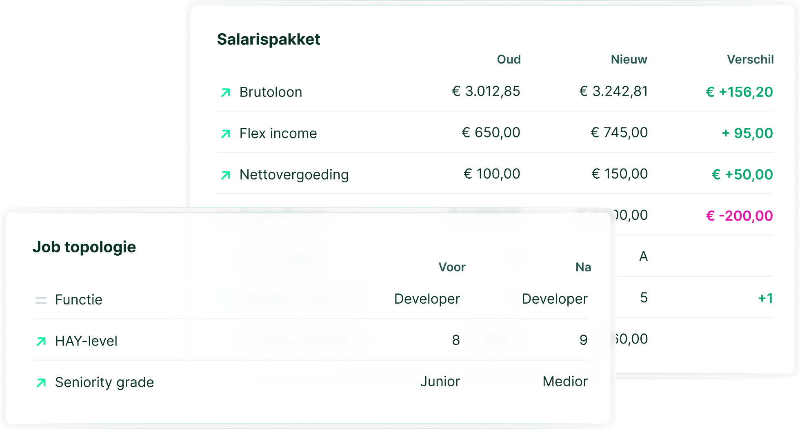

3 weken
in plaats van meer dan twee maanden — 7.000 medewerkers, 18 landen, elk met eigen indexatieregels.
Vraag de case opBelgisch · voor de loonronde
Loonsverhogingen en bonussen in één systeem — en achteraf kun je elke individuele beslissing uitleggen. Gebouwd op Belgische loonregels: loonvorken, anciënniteit, index, paritair comité.
30 minuten, met Bart De Nil. Je ziet je eigen loonregels in de tool.
Referentie
2 maanden → 3 weken
De volledige compensatiecyclus van 7.000 medewerkers in 18 landen.
„Verlonen is nu eindelijk het positieve proces dat het hoort te zijn.”
Gebruikt door HR-teams bij vier Belgische organisaties, van 370 tot 7.000 medewerkers.
Vier cycli, vier getallen
Geen aggregaten, geen „500+ bedrijven”. Vier Belgische organisaties die hun loonronde hebben omgezet, en het getal dat elk van hen noemde.
3 weken
in plaats van meer dan twee maanden — 7.000 medewerkers, 18 landen, elk met eigen indexatieregels.
Vraag de case op7× sneller
De spreadsheets opzetten duurde twee weken. Nu hooguit twee dagen — 4.500 medewerkers, 130 leidinggevenden.
Vraag de case op2 weken
bespaard per jaar — 370 medewerkers, 27 afdelingen, een loonbeleid met vijftig jaar geschiedenis.
Vraag de case op3 maanden
van beslissing tot live — beslist in september, in gebruik begin december, voor 450 bedienden.
Vraag de case opSD Worx is niet alleen klant maar ook de grootste aandeelhouder van Teal Partners. Wij zeggen dat liever zelf: een HR-dienstengroep die haar eigen loonronde op onze tool draait, is een sterker argument dan een logo.
TODO — nodig van klant: wordt „de case” een PDF-download of een echte casepagina?
Fase 1 · vóór de cyclus opent
Het masterbestand. De formules van vorig jaar. De vraag of iemand ze nog begrijpt.
Bij DPG Media werd de loonronde jarenlang gedraaid door één specialist met zelfgebouwde spreadsheets en scripts. Toen die persoon vertrok, vertrok het proces mee. Dat is niet het scenario van een slecht georganiseerd bedrijf — dat is het scenario van elk bedrijf waar één iemand het bestand bouwde.
Links: hoe een loonronde in Excel loopt. Rechts: wat ervan overblijft.
| Stap | In Excel | Met Youbo |
|---|---|---|
| Masterbestand | Formules van vorig jaar overnemen en hopen dat ze kloppen | Je loonbeleid staat als regels in de tool en past zich toe |
| Splitsen | Eén bestand per afdeling. Bij Kaneka waren dat er 27 | Niets splitsen. Iedereen kijkt in hetzelfde scherm |
| Rondsturen | Mailen, en daarna nabellen wie nog niet geantwoord heeft | Je ziet wie zijn budget al verdeeld heeft en wie nog niet |
| Terugkrijgen | Verschillende formaten, versies en kolommen die verschoven zijn | Eén databron. Er valt niets samen te voegen |
| Budget | Pas bij het samenvoegen blijkt dat het budget overschreden is | Het budget wordt bijgewerkt bij elke toekenning |
| Brieven | Met de hand overtypen, en daarna nakijken | Loon- en bonusbrieven worden automatisch correct ingevuld |
„Het papegaaienwerk van overtypen en steeds opnieuw controleren is overbodig geworden.”
Wat je hier wint
2 weken → 2 dagen
Bij DPG Media duurde het opzetten van de spreadsheets makkelijk twee weken. Nu hooguit twee dagen. De piek verschuift weg van het einde van het boekjaar.

Fase 2 · wanneer de cyclus opent
Bij Kaneka verdeelden 27 afdelingshoofden hun budget in evenveel Excel-bestanden. Nu doen ze dat in één scherm.

Openen je leidinggevenden dit ook echt? Bij Kaneka kregen alle leidinggevenden één uur opleiding. Bij Aertssen was er geen handleiding nodig. Bij DPG Media werken 130 leidinggevenden ermee.
Fase 3 · vóór de handtekening
De budgetcontrole staat vóór de goedkeuring, niet erna. Dat is het hele verschil tussen een cyclus van drie weken en een cyclus van twee maanden.
Bij SD Worx kwam de overschrijding vroeger pas boven water op het moment dat HR de documenten samenvoegde — vlak voor de deadline, wanneer herrekenen het duurst is. In Youbo verspringt het cijfer bij elke toekenning. Overschrijdt een leidinggevende zijn budget, dan kleurt het rood. Meer uitleg heeft niemand nodig.
Vraag een demo aan
„Je hebt altijd zicht op wie welke loonsverhogingen en bonussen heeft toegekend. Aanpassingen worden vermeld met datum en verantwoordelijke, tot op het detailniveau. Dat vermijdt discussies achteraf.”
Fase 4 · na de goedkeuring
Dit is het scherm dat de leidinggevende openzet tijdens het evaluatiegesprek. Oud, nieuw, verschil — en waaróm.
Een medewerker die vraagt waarom haar collega meer kreeg, krijgt geen samenvatting maar de regel zelf: HAY-niveau van 8 naar 9, seniority van junior naar medior, brutoloon en flexinkomen los van elkaar zichtbaar. Loon- en bonusbrieven worden met diezelfde gegevens automatisch ingevuld — geen overtypwerk, geen tikfouten in iemands brief.
En dat is het stuk waar de meeste tools stoppen: ze tonen je het scherm waarin je werkt. Dit is wat je overhoudt.

„Waar hr-medewerkers voorheen makkelijk twee weken bezig waren met het opstellen van de spreadsheets, duurt dit nu hooguit twee dagen.”
Preview
De vier fases hierboven zijn de cyclus. Dit zijn de schermen eromheen. Geen video, geen aanmelding — echte schermen uit de Nederlandstalige tool, met echte bedragen erin.
Bezwaar 1 · te specifiek
Youbo komt niet met een eigen model. In een reeks workshops zet het Youbo-team jouw bestaande regels om in regels die de tool toepast. Bij Kaneka was dat een loonbeleid met vijftig jaar geschiedenis over 27 afdelingen. Bij SD Worx achttien landen met elk eigen indexatiewetgeving.
„Je moet je loonbeleid van A tot Z grondig doornemen om het in de tool te vertalen. Die oefening helpt om het kritisch te herbekijken.”
De leidinggevende ziet per medewerker de loonvork en waar iemand daarbinnen zit, en kan teamleden onderling vergelijken.
Seniority, functieniveau en jobtopologie zitten in het voorstel, niet in een aparte kolom die iemand vergeet bij te werken.
Indexatie, promotie, merit en bonus zijn aparte potten. PC 200 indexeerde +2,21 % op 1 januari 2026; die verhoging hoort niet in je meritbudget.
België in april, het Verenigd Koninkrijk in juni, Noorwegen in juli — SD Worx draait ze alle achttien in dezelfde tool.
Aertssen zocht bewust een losstaande tool. Maxime Van Gestel: „Er zijn genoeg tools op de markt, maar die maken meestal deel uit van een hr-softwarepakket. Wij zochten specifiek een tool puur voor het compensatieproces.” Youbo koppelt met je core HR- en payrollsysteem in plaats van het te vervangen.
Bezwaar 2 · hoe lang duurt het
Dat is geen belofte, dat is het schema dat Aertssen Group gedraaid heeft, voor 450 bedienden. Bij Kaneka duurde het drie maanden en werd de eerste cyclus meteen afgerond zonder noemenswaardige problemen.
September
Je loonbeleid wordt regel per regel doorgenomen en omgezet. Dit is het inhoudelijk zwaarste stuk, en het gebeurt met jou, niet voor jou.
Oktober
Loongegevens uit je core HR- of payrollsysteem. Mieke Catthoors tip: test zo snel mogelijk met echte data, dan komen afwijkingen sneller boven.
November
Bij Kaneka kregen alle leidinggevenden samen één uur. Bij Aertssen was er geen handleiding nodig.
December
Op tijd voor een loonronde die in januari of februari opent. Dát is waarom de beslissing in het najaar valt.
„Als je met een computer kunt werken, kun je met Youbo overweg. Je moet je niet door een dikke handleiding worstelen. Er waren ook nauwelijks vragen.”
Veiligheid
Youbo is ISO 27001-gecertificeerd en GDPR-conform. Elke leidinggevende ziet enkel het eigen team en het eigen budget; elke toegang en elke wijziging wordt gelogd.
Zet dat naast het alternatief: een Excel-bestand met een wachtwoord. Wachtwoorden worden doorgestuurd.
Uitleg en bewijs
Elke loonsverhoging uitlegbaar. Ook aan de ondernemingsraad.
Het eerste loonkloofrapport onder de Europese richtlijn is voor werkgevers vanaf 250 werknemers verwacht tegen 7 juni 2027, en het rapporteert over het voorgaande kalenderjaar. De verhogingen die je nu beslist, zijn dus de cijfers van dat rapport.
En om eerlijk te zijn: België heeft die richtlijn voor de privésector vandaag nog niet omgezet. Wie je vertelt dat de wet je nu al iets oplegt, vertelt je iets dat je eigen sociaal secretariaat zal tegenspreken. Wat wél al geldt, staat hiernaast.
„De loonkloofanalyse laat zien wat de loonkloof is, en welke verschillen er statistisch verklaarbaar zijn.”
DPG Media maakt zijn eigen cijfer bekend: een loonkloof van 1,9 %, met de ambitie die weg te werken. Dat is het soort getal dat je enkel publiceert als je weet waar het vandaan komt.
Tot slot
Niet omdat een tool dat vanzelf doet, maar omdat er dan tijd overblijft voor het gesprek waar het eigenlijk over gaat.
Bart De Nil
Reward expert, Teal Partners
30 minuten, met Bart. Hij toont je geen standaarddemo maar zet je eigen loonregels in de tool — je loonvorken, je indexcategorieën, je budgetstructuur — en laat zien wat er dan gebeurt.
Liever meteen iemand aan de lijn? +32 476 96 33 40 of bart.denil@tealpartners.com
„Toen ik een demo zag, wist ik: hier hebben we op gewacht.”
Velden met een sterretje zijn verplicht.
Bart De Nil neemt binnen één werkdag contact op, per mail of telefoon, om een moment van 30 minuten af te spreken. Hij vraagt vooraf kort naar je loonregels, zodat de demo over jouw situatie gaat en niet over een voorbeeldbedrijf.
Kan het niet wachten? Bel +32 476 96 33 40.
Vragen
TODO — nodig van klant: mogen we het prijsmodel benoemen (per medewerker? per cyclus?), en bestaat er een Franstalige interface, ja of nee?